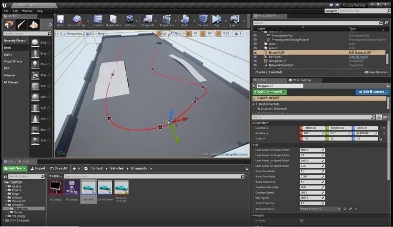

A VR multiplayer game with a decent AI; it was developed with Unreal Engine for Oculus rift. I needed to develop a good AI and good UI prespective inside the car.
Moving along a curve.
So for the car AI to work, you need to add points around your map and a curve will automatically be drawn between them. That will be the path for the car to follow.
Adding Berlin noise.
Berlin noise added to the path of the car to make it look more realistic while following the path.
Avoidance System.
Cars needed to be able to avoid each other and the player's car. So every time a crash happens, the AI will steer left or right whichever is closest.
Adding In-world UI Prespective
Because the final game should be a VR game, the UI must be inside of the car not on the screen. Enjoy the video: